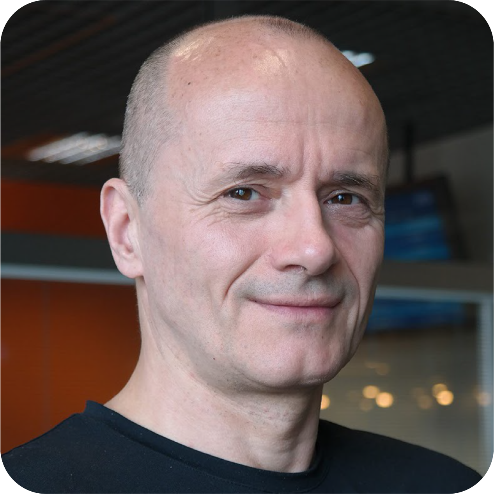

OASIS 2027 (OA27) is a research-based residency programme leading to creation of a festival of sciences and arts exploring strategies for climate emergency.
The seed topic of the OA27 programme is desertification: the processes of fertile lands becoming increasingly arid, mostly due to human activities.
According to scientific reports, more tangible effects of desertification will affect Europe as soon as 2027.
OA27 is currently seeking ten individuals working within various fields of the sciences and arts to apply to participate: to join a cross-disciplinary cohort and become agents of change, who examine the topics of desertification, water retention and soil regeneration through the prism of various disciplines engaged in environmental issues.
The selected participants will become co-curators of the OA27 festival of strategies for climate emergency launching in Magdeburg in October 2022.
The goal of the OA27 programme is to bring forth the understanding of the severity of the climate crisis. Researching the processes of desertification and our relation to water and soil, the programme aims to inspire the change of how we use the planet's resources and position ourselves and agriculture as a part of the ecosystem.
Exploring interconnectedness, OA27 aspires to unite diverse practises embedded in the ecological paradigm, and create a platform for knowledge and resource exchange. To hold a spacetime to collectively envision and experiment alternative approaches for organising the future. To seek deep adaptation strategies, and to foster trans-local alliances that lead to an environmental and societal flourishing.
about desertification
Etymology
desert (n.1) c. 1200, "wasteland, wilderness, barren area," wooded or not, from Old French desert (12c.) "desert, wilderness, wasteland; destruction, ruin" and directly from Late Latin desertum (source of Italian diserto, Old Provençal dezert, Spanish desierto), literally "thing abandoned" (used in Vulgate to translate "wilderness"), noun use of neuter past participle of Latin deserere "forsake" (see desert (v.)).
What is desertification?
European Court of Auditors in their paper “Desertification in the EU” published in June 2018 describes desertification:
“Desertification is a form of land degradation in drylands. It results from unsustainable land management practices and climatic factors. Thirteen EU Member States, not only in the Mediterranean region, but also in Central and Eastern Europe, have declared that they are affected by desertification. Desertification is a consequence, but also a cause of climate change: it is aggravated by more droughts, rising temperatures, less precipitation, and it also magnifies climate change by reducing the capacity of soil to retain carbon.
Desertification does not imply the presence of deserts. It can occur far from any climatic desert, and the presence or absence of a nearby desert has no direct relation to the desertification process.
There are fine lines between drylands, desertified lands and deserts, but, once they are crossed, it is hard to return, as restoring soil is a slow process. It can take 500 years for 2.5 cm of soil to form but only a few years to destroy it1. It is much more cost-effective to protect drylands from degradation than to reverse the process.”
Cultural desertification
Desertification serves as an analogy describing processes of societal degradation, the loss of diversity, complexity and vibrancy of places or communities. Cultural deserts are spaces lacking agency, connectivity, or interests in intellectual and artistic activity. Philosopher Franco “Bifo” Berardi in his book “Breathing: Chaos and Poetry” writes:
“Existence alone has no meaning: this is the truth that we learn from traversing the desert of meaninglessness. But this truth is not frightening so long as we can find oases in the desert: oases of friendship, love, intel- lectual and erotic sharing, conspiration and the projection of a common landscape. Such oases are the precondition for sensuous consciousness and for shared imagination.”

advisory commitee

Cassie Thornton
Cassie is an artist and activist who makes a “safe space” for the unknown, for disobedience, and for unanticipated collectivity. She uses social practices including institutional critique, insurgent architecture, and “healing modalities” like hypnosis and yoga to find soft spots in the hard surfaces of capitalist life. Cassie has invented a grassroots alternative credit reporting service for the survivors of gentrification, has hypnotized hedge fund managers, has finger-painted with the grime found inside banks, has donated cursed paintings to profiteering bankers, and has taught feminist economics to yogis (and vice versa). Her new book, The Hologram: Feminist, Peer-to-Peer Health for a Post-Pandemic Future, is available from Pluto Press.
Wojciech Burkot
Previously, Chief Technology Officer at Grupa Allegro responsible for Marketplace, focused on Mobile and Big Data. Before Allegro, he had started and run Google R&D Center in Krakow as a Site Lead and Engineering Director between 2006-2014. Prior to Google, he worked in a number of roles at Motorola. Earlier in his career, he was an Assistant Professor of Computer Science at AGH in Kraków and a researcher at the Institute of Nuclear Physics.
Jo Vávra
Co-founder + curator, OA27, co-founder + board member, onEarth Foundation, initiator and community weaver, LIOS labs, designer CECI foundation, artist
Jo is an artist, designer and community weaver who loves to explore poetic scenarios of living in enchanted post-capitalist ruins. In her work she plays at the intersection of arts and social science, engaging in practises of collaborative survival, deep adaptation and community building. Jo finds joy being in service to the present, activating and hosting collective transformative processes. She feels most alive looking at the night desert sky, or swimming in the deep blue waters, listening to the algae’s songs of pre-anthropocentric cosmologies. Jo is currently a resident and co-creator of
moos.garden cultural centre in Berlin, Germany.
Jo Vávra
Co-founder + curator, OA27, co-founder + board member, onEarth Foundation, initiator and community weaver, LIOS labs, designer CECI foundation, artist
Jo is an artist, designer and community weaver who loves to explore poetic scenarios of living in enchanted post-capitalist ruins. In her work she plays at the intersection of arts and social science, engaging in practises of collaborative survival, deep adaptation and community building. Jo finds joy being in service to the present, activating and hosting collective transformative processes. She feels most alive looking at the night desert sky, or swimming in the deep blue waters, listening to the algae’s songs of pre-anthropocentric cosmologies. Jo is currently a resident and co-creator of
moos.garden cultural centre in Berlin, Germany.
Wojciech Burkot
Previously, Chief Technology Officer at Grupa Allegro responsible for Marketplace, focused on Mobile and Big Data. Before Allegro, he had started and run Google R&D Center in Krakow as a Site Lead and Engineering Director between 2006-2014. Prior to Google, he worked in a number of roles at Motorola. Earlier in his career, he was an Assistant Professor of Computer Science at AGH in Kraków and a researcher at the Institute of Nuclear Physics.
Wojciech Burkot
Previously, Chief Technology Officer at Grupa Allegro responsible for Marketplace, focused on Mobile and Big Data. Before Allegro, he had started and run Google R&D Center in Krakow as a Site Lead and Engineering Director between 2006-2014. Prior to Google, he worked in a number of roles at Motorola. Earlier in his career, he was an Assistant Professor of Computer Science at AGH in Kraków and a researcher at the Institute of Nuclear Physics.
Wojciech Burkot
Previously, Chief Technology Officer at Grupa Allegro responsible for Marketplace, focused on Mobile and Big Data. Before Allegro, he had started and run Google R&D Center in Krakow as a Site Lead and Engineering Director between 2006-2014. Prior to Google, he worked in a number of roles at Motorola. Earlier in his career, he was an Assistant Professor of Computer Science at AGH in Kraków and a researcher at the Institute of Nuclear Physics.
Wojciech Burkot
Previously, Chief Technology Officer at Grupa Allegro responsible for Marketplace, focused on Mobile and Big Data. Before Allegro, he had started and run Google R&D Center in Krakow as a Site Lead and Engineering Director between 2006-2014. Prior to Google, he worked in a number of roles at Motorola. Earlier in his career, he was an Assistant Professor of Computer Science at AGH in Kraków and a researcher at the Institute of Nuclear Physics.
Wojciech Burkot
Previously, Chief Technology Officer at Grupa Allegro responsible for Marketplace, focused on Mobile and Big Data. Before Allegro, he had started and run Google R&D Center in Krakow as a Site Lead and Engineering Director between 2006-2014. Prior to Google, he worked in a number of roles at Motorola. Earlier in his career, he was an Assistant Professor of Computer Science at AGH in Kraków and a researcher at the Institute of Nuclear Physics.
Wojciech Burkot
Previously, Chief Technology Officer at Grupa Allegro responsible for Marketplace, focused on Mobile and Big Data. Before Allegro, he had started and run Google R&D Center in Krakow as a Site Lead and Engineering Director between 2006-2014. Prior to Google, he worked in a number of roles at Motorola. Earlier in his career, he was an Assistant Professor of Computer Science at AGH in Kraków and a researcher at the Institute of Nuclear Physics.
Wojciech Burkot
Previously, Chief Technology Officer at Grupa Allegro responsible for Marketplace, focused on Mobile and Big Data. Before Allegro, he had started and run Google R&D Center in Krakow as a Site Lead and Engineering Director between 2006-2014. Prior to Google, he worked in a number of roles at Motorola. Earlier in his career, he was an Assistant Professor of Computer Science at AGH in Kraków and a researcher at the Institute of Nuclear Physics.